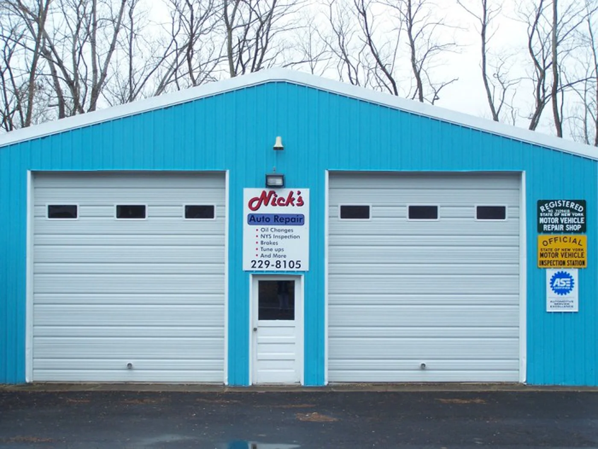
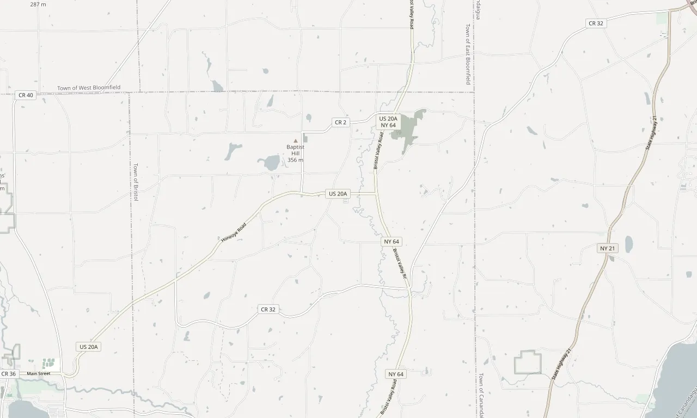

Repairs, service and maintenance on Route 64, just outside Bristol Center. Family owned and operated by Nick and Christina LaBorde.
Mon–Fri 7:30 am–5:30 pm, Sat 8 am–noon

4268 Rte 64, Canandaigua, NY 14424Minutes from Bloomfield and downtown Canandaigua
About the shop
Nicholas and Christina LaBorde
Owners, Nick's Auto Repair
Nick's Auto Repair is family owned and operated by Nicholas LaBorde and his wife Christina.
Our promise to every customer is high quality, honest and reliable repairs, service and maintenance for all your automotive needs. Stop in and see us, or call Nick to schedule an appointment.
“Thanks again for your business, we value each and every one of our customers, new and old!”
What Nick works on
Our services include, but are by no means limited to, the list below. Not sure if your problem is on it? Call and ask.
- 01NYS inspectionsAn official New York State inspection station
- 02BrakesSquealing, grinding or a soft pedal
- 03SuspensionClunks over bumps, a bouncy ride
- 04Lube, oil and filterOil changes, as on the sign out front
- 05Tune-upsPart of keeping a car running right
- 06ExhaustLouder than it used to be, or rattling
- 07TiresWorn, damaged or losing air
- 08AlignmentsThe car pulls, or the wheel sits crooked
- 09And moreIf it's on your car, ask Nick
On the wall out front
Three signs hang by the bay doors on Route 64. This is what they say.
Motor Vehicle
Repair Shop Green sign, right of the bay doors
Motor Vehicle
Inspection Station Yellow sign, under the green one
Bringing your car in
- 1
Call Nick
Tell him what the car is doing and set a time for him to take a look: (585) 229-8105.
- 2
Or just stop in
Monday to Friday 7:30 am to 5:30 pm, Saturday 8 am to noon.
- 3
Look for the blue building
4268 Rte 64, just outside Bristol Center. Minutes from Bloomfield and downtown Canandaigua.

Bristol CenterNick's, 4268 Rte 64Open in Google MapsMap data © OpenStreetMap contributors. Pin placed from the street address.
4268 Rte 64, Canandaigua, NY 14424
Directions| Monday | 7:30 am – 5:30 pm |
|---|---|
| Tuesday | 7:30 am – 5:30 pm |
| Wednesday | 7:30 am – 5:30 pm |
| Thursday | 7:30 am – 5:30 pm |
| Friday | 7:30 am – 5:30 pm |
| Saturday | 8:00 am – noon |
| Sunday | Closed |